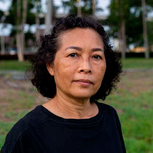
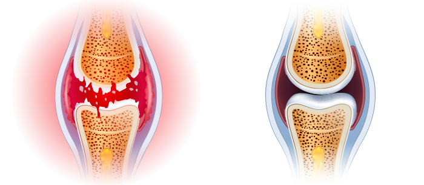

Por causa da dor nos joelhos e nas costas, eu mal conseguia andar. Comprimidos,
injeções e cirurgias não tiveram nenhum efeito em mim. Pelo contrário: eles
me tiraram dinheiro e energia. Não sabia o que fazer. Felizmente, descobri o remédio.
E que bom que eu fiz isso! Eu senti-me melhor desde a primeira vez que tomei. Num mês ou
mais sinto-me novinha. Faço caminhadas longas e cuido do jardim que
plantamos com a neta. A dor é esquecida. Obrigada!
★ ★ ★ ★
★
Marta Gonçalves, 73 anos
Simplicidade e eficiência
É difícil acreditar que um método tão simples seja tão eficaz, basta
tomar o remédio e depois de alguns dias aproveitar os movimentos sem desconforto. Minha
irmã, meus primos e eu usei e recomendo a todos. Adeus ao desconforto nas
articulações.
★
★ ★ ★ ★
Isabela Viegas, 67 anos
Sinto-me necessário.
Anos de trabalho difícil na empresa deram uma surra nos meus joelhos. Prometi aos meus
netos que jogaria futebol ou iria andar de bicicleta com eles, mas não podia por causa da
dor. As crianças não entendiam essas coisas e ficavam chateadas. Eu senti-me
inútil. Até que minha filha me fez tentar . Eu senti a
diferença
imediatamente. Faz um mês desde que o tomo e me sinto invulnerável, agora posso passar
tempo com minha família, especialmente com meus netos, como costumava fazer.
★
★ ★ ★ ★
César Delgado, 67 anos
Recuperei a minha vida.
O excesso de peso e o longo trabalho em pé arruinaram os meus joelhos, Eu não
suportava a dor, então tomava mais de 10 comprimidos por dia. Mas eu me sentia-me drogada e
sonolenta, não conseguia viver bem. Felizmente, um colega de trabalho recomendou este
produto incrível. Acabou sendo a solução perfeita. A dor desapareceu como se
fosse mágica, e eu envolvi-me novamente no trabalho do cabeleireiro. Eu recuperei a minha
saúde, o que me permitiu começar a treinar e ... Perdi 10 quilos! Mudanças
incríveis.
★
★ ★
★ ★
Ana Pires, 43 anos
A minha esposa parou de reclamar.
A minha esposa sempre encontra algo para fazer em casa: consertar a torneira, mover o
armário ou pintar alguma coisa. Como eu deveria me curvar e me esforçar se minhas
costas falhavam? Bem como cotovelos e joelhos. Felizmente, o gel
ajudou
à minha
coluna vertebral e articulações a se recuperarem. Senti como se tivesse perdido o peso
que carregava há anos. A minha esposa parou de reclamar que eu não queria
ajudá-la em casa!
★
★ ★
★ ★
Sergio Ramos, 67 anos
Estou de volta ao trabalho
Imagine como é não mover uma mão. Difícil, não é? Foi exatamente o
que aconteceu comigo, porque os meus dedos doíam, minhas mãos inchavam e tremiam. Sou
joalheiro, o que eu faço é meu trabalho e minha paixão. Eu tinha que fechar a
minha pequena oficina cada vez mais e, por causa disso, a situação com o dinheiro em
casa estava piorando cada vez mais. Comecei a procurar métodos de reparo articular e me
disseram em todos os lugares que o melhor é este produto .
Eu
tentei sem
verificá-lo, mas depois de 20 dias as minhas mãos estavam mais saudáveis
do que há 10 anos. Consegui voltar ao trabalho!
★ ★ ★ ★
★
Rafael Brito, 55 anos
Uma nova vida a um preço tão baixo
Normalmente, se algo é eficaz, deve ser caro. Esse foi o caso do meu massagista pessoal,
que me custou mil e quatrocentos por mês e teve que fazer maravilhas. No entanto, pelo
contrário, só piorou e as minhas articulações e a coluna doíam ainda
mais. Quando meu cunhado me aconselhou a tentar , eu pensei que
era uma
besteira
total. Como um gel pode me ajudar quando um massagista supostamente fenomenal não me
ajudou? Você veria meu rosto quando a dor desapareceu. É um milagre!
★
★ ★ ★ ★
Rita Nunes, 67 anos

O único método eficaz
Eu tentei métodos diferentes para me livrar da crise e dor no quadril. Nada ajudou. E, o
que piorou, a degeneração se espalhou para a coluna vertebral. Com o
tudo aconteceu ao contrário. Não me preocupo mais com minha
saúde, porque eu sou 100% saudável!
★ ★ ★ ★
★
Iara Mendonça, 59 anos
Após 14 dias, você esquecerá a dor nas
articulações e na coluna vertebral - o efeito é garantido por testes independentes
Bom dia,
Eu sou o Professor Luis Ramos, cientista e especialista em biologia molecular. Aqui, quero
apresentá-lo à maior conquista da minha vida. Eu desenvolvi um método pelo qual qualquer
pessoa pode eliminar a dor, bem como reparar as articulações e a coluna e ainda recuperar 100%
da mobilidade em apenas 14 dias.
Então, se você quiser, SEM drogas químicas e
ineficazes:
Aliviar a dor nas articulações e coluna vertebral - sentir alívio
imediatamente após a aplicação do método;
Reparar e fortalecer as articulações, tendões, músculos e coluna
vertebral a 87% para que eles funcionem como novos;
Retornar 100% de saúde física e não ter medo de ficar incapacitado;
Eliminar rigidez e dormência nas articulações e coluna vertebral,
trazer de volta o conforto e a suavidade dos movimentos;
Proteja suas articulações e coluna vertebral de quebrar e manter a
saúde física absoluta para os próximos anos;
Eliminar degeneração, inflamação e assim por diante - reduzir a
dor e trazer de volta o conforto no movimento;
Restaurar o corpo após fraturas, entorses e lesões;
E graças a isso ter 3 vezes mais energia e novamente aproveitar a
vida!
Você deve saber que tudo isso pode ser alcançado sem cirurgias perigosas, tratamentos caros,
espera interminável na fila aos especialistas (que também desistem sem conseguir fazer
nada...) e sem engolir produtos químicos venenosos (prejudiciais ao fígado, estômago e
rins)... e finalmente, economizar milhares de euros. Se você quiser fazer isso,
você deve ler o que eu quero lhe dizer.
Não importa quantos anos você tem e quanto tempo sofre de dor nas articulações ou na
coluna vertebral. Não importa se seus ossos rangem por 2 dias ou 20 anos. Mesmo que o médico
tenha lhe dito que suas articulações e coluna estão completamente destruídas e
você perdeu toda a esperança de uma vida normal... Você deve saber que já
após 14 dias, você poderá desfrutar de 100% de mobilidade. Sem dor!
Veja por que o meu método é uma alternativa para maneiras ineficazes de lidar
com a dor nas articulações:
Alivia a dor imediatamente após a aplicação, e através de
14 dias elimina-a para sempre;
seguro para o corpo: a fórmula macromolecular é na forma de um gel 100%
natural que funciona em perfeita harmonia com o corpo humano.
repara até as articulações e a coluna mais danificadas para que eles
funcionem como novos, sem dor;
é fácil de aplicar e todos podem receber tratamento em casa por conta
própria, em vez de esperar nos consultórios médicos e implorar por ajuda;
permite economizar milhares de euros em vez de gastá-los em medicamentos e
terapias químicas caras e ineficazes.
Eu desenvolvi um método natural que irá reparar as suas articulações
quebradas e a coluna vertebral
Graças a ele você esquecerá a dor e o medo da incapacidade total...
Todos os problemas que você sofre devido a articulações fracas ou coluna vertebral fraca
serão coisa do passado. Você se livrará completamente não apenas da dor, mas
também da rigidez, espasmos e inchaço. Finalmente, você será capaz de fazer todas as
coisas que você não poderia fazer por causa da dor.
Você será capaz de subir escadas, inclinar-se, carregar netos nos seus braços sem
problemas. Você pode cuidar com segurança do jardim, caminhar, andar de bicicleta,
dançar! E tudo isso porque consegui desenvolver uma fórmula inovadora para restaurar
as articulações e devolvê-las à mobilidade total. Como eu fiz isso?
Eu queria salvar a minha mãe da deficiência
De acordo com os estudos recentes, um de cada três residentes portugueses entre 36 e 95 anos tem
problemas nas articulações ou na coluna vertebral. Essas pessoas muitas vezes nem percebem
isso, acreditam que é normal que às vezes o corpo doa, entorpece ou clica. No entanto, a
maioria está em risco de destruição significativa da cartilagem e
degeneração que pode levar à incapacidade.
Infelizmente, esse problema também afetou minha mãe. No início, ela tinha dificuldade em
subir escadas ou levantar-se do sofá. Mas depois a situação piorou... O jardim que ela
cuidava com tanto prazer começou a crescer com ervas daninhas porque ela não podia cuidar
dele. Ela parou de nos convidar para jantares com a família. Ela estava ficando cada vez mais
irritada e triste. Então, devido à dor nos joelhos, quadris, coluna e cotovelos, ela não
conseguia nem tomar banho.
Isso era perigoso para a vida dela!
Pior de tudo foi que a imobilidade começou a ameaçar sua vida. Nunca esquecerei o dia em que
vim buscar minha mãe para levá-la ao gastroenterologista. Minha mãe só precisava
atravessar a rua e... ela quase foi atropelada por um carro! Ela estava andando muito devagar por causa
da dor e, de repente, seu joelho ficou tão imóvel e doloroso que ela não podia
dar um passo. O motorista freou no último momento...
Fiquei furioso quando vi a bolsa da minha mãe cheia de vários remédios para
articulações anunciados. Acontece que ela os tomava-os em punhados. Assim ficou claro por que
ela tinha úlceras estomacais, problemas no fígado e outros problemas
estomacais... A mulher queria fazer alguma coisa, mas esses medicamentos não apenas
não ajudaram, mas finalmente envenenaram seu corpo.
Como inventei uma "patente" para articulações indestrutíveis?
Eu tive que ajudar minha mãe a recuperar as articulações saudáveis e, com elas, a
saúde e a alegria de viver. Eu queria que ela fosse uma bisavó maravilhosa para meus netos,
assim como ela era uma mãe maravilhosa para mim. Então eu pensei: "Cara, você é
um cientista! Você participou na descoberta de muitas substâncias que combatem várias
doenças. Por que você não desenvolve um remédio para fortalecer as
articulações?" Então eu comecei os testes...
Durante um ano, fiz testes intensivos no laboratório. Eu testei diferentes combinações de
substâncias ativas na minha mãe. Devo enfatizar que todos eles foram 100% naturais e
seguros para o corpo. Inspirei-me nas receitas de ervas monásticas e as combinei com
os últimos avanços da biologia molecular. Conhecimento científico, fé na natureza e
uma pitada de sorte valeram a pena rapidamente: criei uma fórmula macromolecular única.
Eu imediatamente comecei a realizar testes em larga escala. Eficiência 98%
confirmado pelos maiores institutos de pesquisa da Europa e dos EUA! Mesmo na fase de testes, minha
fórmula macromolecular restaurou naturalmente as funções das articulações e da
coluna vertebral em milhares de voluntários.
Efeitos surpreendentes
A dor da minha mãe diminuiu imediatamente depois de tomar o produto. Ela ficou feliz por não
ser mais atormentada pela dor latejante nos joelhos. Mas isso foi apenas o começo. Depois de uma
semana, suas articulações e coluna pararam de triturar e entorpecer. Então o inchaço
nos joelhos e cotovelos desapareceu, todas as inflamações nas articulações e na
coluna desapareceram. Minha mãe voltou a cuidar de seu jardim favorito. Todos ficamos surpresos
quando ela de repente sentou-se na bicicleta e andou feliz!
"Por que você está andando tão devagar?" ela perguntou impaciente enquanto
todos nós fomos jantar em família. E nós simplesmente não nos acostumamos a andar
devagar na presença dela. Depois de 3 semanas, a minha mãe admitiu alegremente: "Filho,
as minhas articulações estão curadas. Eu me sinto tão ágil como quando era
jovem! Você inventou um remédio para curar a dor nas articulações! Quantas
pessoas você vai ajudar! Estou muito agradecida a você." E, de fato, a
minha mãe, no seu aniversário de 85 anos, dançou de felicidade com seus bisnetos. E os
convidados ficaram com os olhos esbugalhados quando viram em que forma ela estava!
A minha
mãe recuperou completamente a mobilidade e, com ela, a energia e a alegria de viver.
Até agora, a deterioração das articulações e da coluna vertebral tem sido
inevitável ao longo dos anos. Hoje, com a ajuda da minha fórmula macromolecular, o processo de
desgaste das articulações e vértebras do esqueleto humano pode não apenas ser
retardado, mas também revertido.
Deixe-me explicar exatamente como minha fórmula super eficaz para articulações fortes
funciona. Esse processo é bastante complicado, mas tentarei explicá-lo de uma maneira que seja
compreensível e não especializada.
Alivia imediatamente a dor e repara as articulações 24 horas por dia
As articulações e a coluna se desgastam ao longo dos anos, mas também se deterioram
devido ao excesso de peso, trabalho físico intenso, transporte de objetos pesados, exercícios
excessivos, lesões e contusões. O líquido sinovial e a cartilagem são
destruídos. As articulações são como uma dobradiça não lubrificada: elas
começam a esfregar e degradar constantemente. Com o tempo, você começa a sentir rigidez e
uma dor terrível que impede que você se mova normalmente. Inflamação e
degeneração grave se desenvolvem.
Infelizmente, as células da cartilagem e do líquido sinovial não têm a capacidade de
se reparar. Isso significa que, ao contrário de outras células do corpo humano, elas não
podem voltar à vida. É por isso que suas articulações e a coluna vertebral se
deterioram dia a dia. Claro que você não vai parar de andar e fazer atividades diárias
para proteger suas articulações e coluna vertebral. Isso seria absurdo.
Então, minha tarefa era criar uma fórmula radical que eliminará a dor,
reparará as articulações e a coluna danificadas e as protegerá de danos futuros.
E eu consegui! Eu desenvolvi uma fórmula macromolecular para regeneração
intensiva. Eu chamei-a .
A fórmula única penetra instantaneamente nas áreas afetadas e desliga os impulsos
elétricos de dor ao nível celular, para que você possa fazer seus
negócios sem dor. Devido às suas propriedades, estimula a nutrição celular que
restaura os processos regenerativos em 300%. Ao mesmo tempo, os ingredientes naturais
desencadeiam os processos de regeneração automática da cartilagem e do líquido
sinovial. A aplicação regular desta fórmula é suficiente para que a
regeneração ocorra 24 horas por dia. Você faz o que sempre faz e as suas
articulações e coluna ficam mais jovens e restauram a mobilidade. Assim, a
degeneração e a dor desaparecem para sempre em 30 dias. Sem efeitos colaterais!
Por que a minha fórmula macromolecular foi chamada de "antídoto milagroso
para dor nas articulações"?
ELA É MAIS DO QUE 98% EFICAZ NA REPARAÇÃO DO TECIDO CARTILAGINOSO
E DO LÍQUIDO SINOVIAL

ANTES
Uma articulação destruída e afetada
pela degeneração e dor
DEPOIS
Articulação reparada: 100% saudável e
sem dor
Até agora, isso pode parecer um milagre. No entanto, é um fato que confirma o caso de minha
mãe e 14 mil pessoas que já conseguiram recuperar articulações e coluna fortes
graças ao meu método. Além disso, a eficácia da fórmula macromolecular
foi aprovada incondicionalmente pelo centro de pesquisa alemão em Dortmund. É
uma descoberta global que ganhou o reconhecimento e a admiração dos melhores especialistas em
Reumatologia, ortopedia e neurologia. Por outro lado, continuo recebendo cartas emocionais de pessoas
que me agradecem por "curá-las"; essa é a principal razão pela qual estou feliz
e orgulhoso dessa descoberta.
100% SEGURO E EXTREMAMENTE FÁCIL DE USAR
Ingredientes naturais fazem maravilhas: a ciência conseguiu criar a composição
perfeita! Foi esse lema que me acompanhou na criação da fórmula macromolecular para
reparo articular. Só precisa aplicar com movimentos circulares de massagem uma pequena
quantidade do produto até ser completamente absorvido 2-3 vezes ao dia para eliminar a dor e,
dia após dia, aproveite o fortalecimento das articulações e da coluna vertebral e
volte a uma vida plena! (O efeito depende das características de cada organismo)
Todos os seus amigos e parentes que estão acostumados a vê-lo sofrendo de dor,
mal andando, ficarão impressionados. Quando eles vêem você correndo, andando de bicicleta
e dançando sem dor, eles não vão acreditar que você recuperou suas
articulações em 30 dias!
ALÍVIO IMEDIATO DA DOR
TRATAMENTO NATURAL SEM EFEITOS COLATERAIS
RECUPERAÇÃO DE ARTICULAÇÕES E COLUNA VERTEBRAL
UTILIZAÇÃO SIMPLES
100% DA CAPACIDADE FÍSICA EM 30 DIAS
ECONOMIA DE MILHARES DE EUROS
Como você pode perder essa oportunidade de vencer a dor e recuperar sua saúde
para sempre?
Você pode continuar sofrendo de dores nas articulações e na coluna. Você também
pode arruinar sua saúde com produtos químicos nocivos e viver com o espectro da
deficiência à espreita atrás de você? Mas por que se eu garanto a você
uma maneira rápida, fácil e barata recuperar sua saúde sem dor?
Você só precisa de 30 dias de tratamento para se juntar aos 14.000 usuários satisfeitos
com o , que já derrotaram a dor, recuperaram as
articulações e a
coluna e
agora desfrutam de boa saúde!
Você não arrisca nada!
Utilizando o , você elimina instantaneamente a dor e restaura a
mobilidade
física em 30 dias. E você não arrisca nada! Como uma conquista mundial, a minha
fórmula macromolecular ganhou garantia tripla de prestígio: originalidade,
qualidade e satisfação.
Garantia de satisfação tripla
1. Garantia de originalidade: num remédio macromolecular
é
utilizada uma fórmula baseada em substâncias mais poderosas que restauram as
articulações e a coluna vertebral. Sua eficácia é confirmada por testes
laboratoriais. Esta é a única fórmula inovadora desse tipo. Portanto, você pode ter
certeza de obter o produto original disponível apenas através deste site.
2. Garantia de qualidade: com o processo avançado de produção de
fórmula macromolecular, atende aos mais altos padrões de qualidade. Considerando sua
saúde e bem-estar, a concentração de substâncias ativas é selecionada para que
o tratamento seja completamente seguro. E tudo isso para que sua ação 100% atenda às suas
expectativas.
3. Garantia de satisfação: numerosos testes laboratoriais e de consumo
confirmam o aumento da eficiência . Graças a esses resultados, o
remédio
recebeu o reconhecimento de especialistas de todo o mundo que a recomendam aos seus pacientes. Eles
estão convencidos de que, em 30 dias, você se livrará da dor nas articulações e
na coluna vertebral, além de recuperar 100% da mobilidade.
Esqueça a dor, repare as articulações e recupere 100% da saúde
física em 30 dias com facilidade, segurança e economia
Grandes empresas farmacêuticas nos EUA e no Japão estão literalmente lutando por uma
patente para minha fórmula macromolecular. Quando eu vendê-lo, o remédio
estará disponível em todo o mundo, mas certamente a um preço
exorbitante.
Até que isso aconteça, decidi disponibilizá-lo em Portugal, unindo-me a um clube de
descontos com financiamento 50% mais barato. Tudo para ajudar o maior número
possível de pessoas na minha terra natal a se livrar de problemas nas articulações e na
coluna vertebral de uma vez por todas.
Por isso, encorajo-vos a aproveitar esta oportunidade! Fazer um pedido no clube de descontos é
muito simples. Você não precisa enviar dinheiro ou pagar com cartão para obter o produto.
Tudo o que você precisa fazer é preencher o formulário em 2 minutos e
depois de alguns dias, você receberá uma embalagem pelo qual será conveniente pagar no
correio.
Obrigado por reservar um tempo para ler a minha mensagem. Desejando-lhe boa saúde na sua vida nova
em que você vai desfrutar de boa saúde I... Em apenas 30 dias, você
estará dançando, correndo, andando de bicicleta e poderá fazer todas as coisas que a dor
limitou até agora!
Professor Luis Fernandes
Obtenha
para
participar num
clube de descontos com desconto 50%
Embalagens disponíveis 0 0 7
Encomenda hoje e economize . A promoção termina
quando o limite de 200 encomendas for atingido.
Comentário:
Maros Ferreira
A história de uma vida inteira! Eu passei por nove círculos
do inferno no hospital, através de todos os procedimentos e torturas de tratamento. As
articulações doíam e continuavam doendo. Eu sofro das articulações
até agora. Onde posso encontrar esse ?
Este remédio não é vendido em farmácias! Passei
todas as farmácias da cidade! Eu encomendei aqui, o remédio veio rapidamente,
além disso, eles oferecem um desconto aqui. Eu comecei o curso :)
Passei por duas cirurgias. Cerca de seis meses eu estava deitado, a
recuperação foi muito longa. Eu encontrei e depois
de um
mês eu esqueci a operação, meus joelhos pararam de doer e inchar! Um
remédio realmente bom sem efeitos colaterais
Meu avô passou por tratamento e
não
tomou nenhum medicamento. Ele diz que nasceu de novo. Antes disso, ele estava deitado na
cama por dias, e agora ele está sempre fazendo alguma coisa, sempre o vejo ocupado
Eu trabalho como treinador. Muitas vezes tenho lesões nas
articulações e me ajuda. O remédio alivia a
dor e
repara rapidamente
a articulação danificada.
Passei toda a minha vida a praticar patinação
artística, mas tive que parar... minhas articulações doem muito. Não fui
ao médico. Os médicos prescrevem muitos medicamentos caros, mas não há
resultado. Tive a sorte de ter minha tia trabalhando como terapeuta e me aconselhou a
procurar . Eu precisei de apenas 3 pacotes para uma
recuperação completa!
Um ano atrás eu machuquei meu braço esquerdo, meu cotovelo
estava doendo constantemente. No hospital queriam-me fazer uma cirurgia. Fiquei com medo,
recusei e fui procurar soluções alternativas. Minha avó me deu , ela usa para as articulações e ajuda-lhe bem.
Após
as primeiras aplicações, a dor diminuiu, mas o desconforto permaneceu e, em
seguida, o remédio acabou... Vou encomendar mais)
Eu fui capaz de curar artrite crônica com ! Em apenas um
curso de tratamento! Minha esposa comprou para mim. Ela disse que ouviu falar sobre sua
eficácia e passou por todas as nossas farmácias, e então o vendedor disse a
ela que você só pode comprá-lo on-line.
Eu concordo com todos os comentários. Este remédio realmente
funciona! Eu hesitei em comprá-lo, tentei muitas pomadas, remédios e
remédios. O efeito sempre foi temporário. Após a aplicação as articulações pararam de doer para sempre. O
tratamento
levou apenas um pouco mais de um mês.
Por causa da dor nos joelhos e nas costas, eu mal conseguia andar. Pomadas,
injeções e cirurgias não tiveram nenhum efeito em mim. Pelo contrário:
eles me tiraram dinheiro e energia. Não sabia o que fazer. Felizmente, descobri o
remédio. E que bom que eu fiz isso! Eu senti-me melhor desde a primeira vez que tomei.
Num mês ou mais sinto-me novinha. Faço caminhadas longas e cuido
do jardim que plantamos com a neta. A dor é esquecida. Obrigada!
★
★ ★ ★ ★
Marta Gonçalves, 73 anos
Simplicidade e eficiência
É difícil acreditar que um método tão simples seja tão eficaz,
basta tomar o remédio e depois de alguns dias aproveitar os movimentos sem desconforto.
Minha irmã, meus primos e eu usei e recomendo a todos. Adeus ao desconforto nas
articulações.
★ ★
★ ★ ★
Isabela Viegas, 67 anos
Sinto-me necessário.
Anos de trabalho difícil na empresa deram uma surra nos meus joelhos. Prometi aos meus
netos que jogaria futebol ou iria andar de bicicleta com eles, mas não podia por causa
da dor. As crianças não entendiam essas coisas e ficavam chateadas. Eu senti-me
inútil. Até que minha filha me fez tentar . Eu senti
a
diferença
imediatamente. Faz um mês desde que o tomo e me sinto invulnerável, agora posso
passar tempo com minha família, especialmente com meus netos, como costumava fazer.
★
★ ★ ★ ★
César Delgado, 67 anos
Recuperei a minha vida.
O excesso de peso e o longo trabalho em pé arruinaram os meus joelhos, Eu não
suportava a dor, então tomava mais de 10 comprimidos por dia. Mas eu me sentia-me
drogada e sonolenta, não conseguia viver bem. Felizmente, um colega de trabalho
recomendou este produto incrível. Acabou sendo a solução perfeita. A dor
desapareceu como se fosse mágica, e eu envolvi-me novamente no trabalho do
cabeleireiro. Eu recuperei a minha saúde, o que me permitiu começar a treinar e
... Perdi 10 quilos! Mudanças incríveis.
★ ★
★ ★ ★
Ana Pires, 43 anos
A minha esposa parou de reclamar.
A minha esposa sempre encontra algo para fazer em casa: consertar a torneira, mover o
armário ou pintar alguma coisa. Como eu deveria me curvar e me esforçar se minhas
costas falhavam? Bem como cotovelos e joelhos. Felizmente, o gel
ajudou à
minha coluna vertebral e articulações a se recuperarem. Senti como se tivesse
perdido o peso que carregava há anos. A minha esposa parou de reclamar que eu não
queria ajudá-la em casa!
★ ★
★ ★ ★
Sergio Ramos, 67 anos
Estou de volta ao trabalho
Imagine como é não mover uma mão. Difícil, não é? Foi
exatamente o que aconteceu comigo, porque os meus dedos doíam, minhas mãos
inchavam e tremiam. Sou joalheiro, o que eu faço é meu trabalho e minha
paixão. Eu tinha que fechar a minha pequena oficina cada vez mais e, por causa disso, a
situação com o dinheiro em casa estava piorando cada vez mais. Comecei a procurar
métodos de reparo articular e me disseram em todos os lugares que o melhor é este
produto . Eu tentei sem verificá-lo, mas depois de 20
dias
as
minhas mãos estavam mais saudáveis do que há 10 anos. Consegui
voltar ao trabalho!
★
★
★ ★ ★
Rafael Brito, 55 anos
Uma nova vida a um preço tão baixo
Normalmente, se algo é eficaz, deve ser caro. Esse foi o caso do meu massagista
pessoal, que me custou mil e quatrocentos por mês e teve que fazer maravilhas. No
entanto, pelo contrário, só piorou e as minhas articulações e a coluna
doíam ainda mais. Quando meu cunhado me aconselhou a tentar , eu
pensei
que era uma besteira total. Como um gel pode me ajudar quando um massagista supostamente
fenomenal não me ajudou? Você veria meu rosto quando a dor desapareceu.
É um milagre!
★ ★
★ ★ ★
Rita Nunes, 67 anos
O único método eficaz
Eu tentei métodos diferentes para me livrar da crise e dor no quadril. Nada ajudou. E,
o que piorou, a degeneração se espalhou para a coluna vertebral. Com ,
tudo aconteceu ao contrário. Não me preocupo mais com minha
saúde, porque eu sou 100% saudável!


Comentário:
Maros Ferreira
A história de uma vida inteira! Eu passei por nove círculos do inferno no hospital, através de todos os procedimentos e torturas de tratamento. As articulações doíam e continuavam doendo. Eu sofro das articulações até agora. Onde posso encontrar esse ?
Helena Bravo
Este remédio não é vendido em farmácias! Passei todas as farmácias da cidade! Eu encomendei aqui, o remédio veio rapidamente, além disso, eles oferecem um desconto aqui. Eu comecei o curso :)
Marco Vinicius
Passei por duas cirurgias. Cerca de seis meses eu estava deitado, a recuperação foi muito longa. Eu encontrei e depois de um mês eu esqueci a operação, meus joelhos pararam de doer e inchar! Um remédio realmente bom sem efeitos colaterais
Enrique Madeira
Meu avô passou por tratamento e não tomou nenhum medicamento. Ele diz que nasceu de novo. Antes disso, ele estava deitado na cama por dias, e agora ele está sempre fazendo alguma coisa, sempre o vejo ocupado
Simão Rodrigues
Eu trabalho como treinador. Muitas vezes tenho lesões nas articulações e me ajuda. O remédio alivia a dor e repara rapidamente a articulação danificada.
Sónia Dias
Passei toda a minha vida a praticar patinação artística, mas tive que parar... minhas articulações doem muito. Não fui ao médico. Os médicos prescrevem muitos medicamentos caros, mas não há resultado. Tive a sorte de ter minha tia trabalhando como terapeuta e me aconselhou a procurar . Eu precisei de apenas 3 pacotes para uma recuperação completa!
Camila Viegas
Um ano atrás eu machuquei meu braço esquerdo, meu cotovelo estava doendo constantemente. No hospital queriam-me fazer uma cirurgia. Fiquei com medo, recusei e fui procurar soluções alternativas. Minha avó me deu , ela usa para as articulações e ajuda-lhe bem. Após as primeiras aplicações, a dor diminuiu, mas o desconforto permaneceu e, em seguida, o remédio acabou... Vou encomendar mais)
Edisson Guimarães
Eu fui capaz de curar artrite crônica com ! Em apenas um curso de tratamento! Minha esposa comprou para mim. Ela disse que ouviu falar sobre sua eficácia e passou por todas as nossas farmácias, e então o vendedor disse a ela que você só pode comprá-lo on-line.
Manuel Castro
Eu concordo com todos os comentários. Este remédio realmente funciona! Eu hesitei em comprá-lo, tentei muitas pomadas, remédios e remédios. O efeito sempre foi temporário. Após a aplicação as articulações pararam de doer para sempre. O tratamento levou apenas um pouco mais de um mês.